按版本查看测试记录
每个编号固定对应一项表现；每个版本逐项记录实际现象、是否通过和证据。“未测”“片段观察”“中断”“待验收”均不是通过。
v3.8 · 2026-10-23
颈内宽15%～3%的周期函数、固定细粒与粗档孔隙、近满局部接收、暂停闪光时钟。隐藏PC关联检查和独立对抗性复查，保留失败原图。
v3.7 · 2026-10-23
持续真实粒子取代整束波浪轮廓；保留工程检查记录，用户反馈后的视觉复审不通过。
v3.1 · 2026-10-14
Pymunk 接入的 30 项 PC 专项检查通过，核对了 26 张阶段图；旧规则的完整矩阵没有全部执行，不能把下方未测编号当成失败或通过。
36 个编号 · 通过 0 · 不通过 0 · 尚未完成验收 36

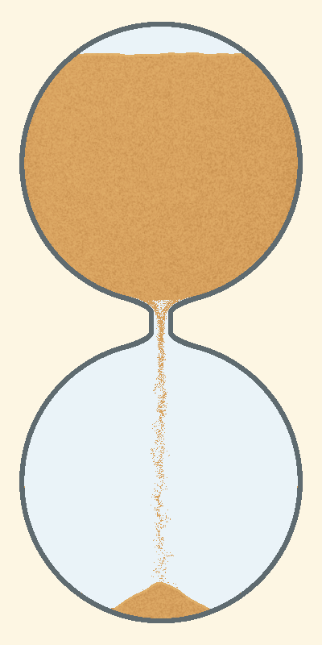

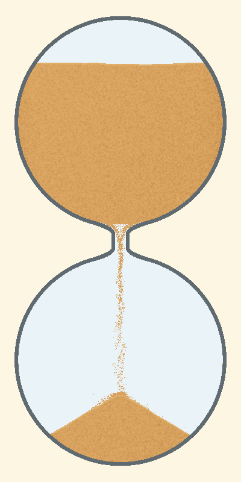

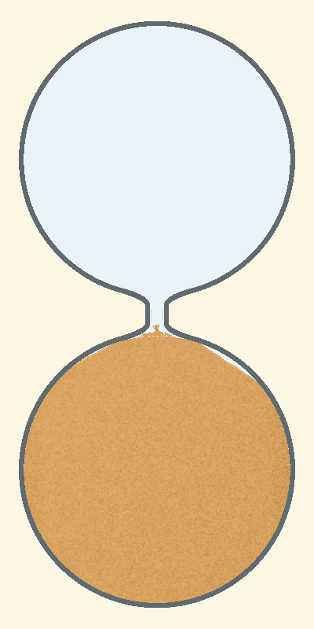
v3.0 · 2026-10-13
只减缓下段随落速变快而变稀疏的幅度：归一化落速不超过350px/s时保持原样，超过后轻微增加绘制补量，最多增加6px。上段、粒子数、物理与随机外缘不变。仅比较开局、中段、末段三组相关外观，并检查同一绘制公式；没有帧率或全应用回归。
36 个编号 · 通过 0 · 不通过 0 · 尚未完成验收 36

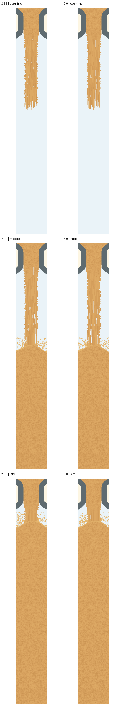
v2.98 · 2026-10-13
按用户反馈将绘制拖尾补量从 16px 小幅提高到 20px，减少沙柱内的可见空隙，宽度、粒子数和物理不变。只对照开局、首次落地、中段、末段四组外观；预期沙柱及版本文字范围之外 0 像素差异。没有新增帧率、音频或完整应用回归。仍是源码覆盖，不是新 APK 安装证明。
36 个编号 · 通过 0 · 不通过 0 · 尚未完成验收 36

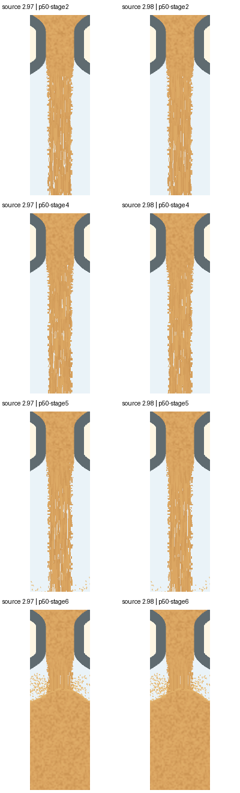
v2.97 · 2026-10-13
三项外观问题初步改善：开局保持较密的效果；出口纹理逐渐衔接；外缘有细碎随机起伏。后续补了原 2.96 APK 与最新源码的 39 组同种子同进度对照，改动范围之外 0 像素差异，粒子数和沙量账本一致；另修正边缘噪声的 64 秒回绕风险。按用户要求，本次只验外观，不扩展为帧率、音频或完整应用验收。旧录像属于首轮修复，最新代码对应新增对照图；源码覆盖不等于新 APK 已安装。
36 个编号 · 通过 0 · 不通过 0 · 尚未完成验收 36

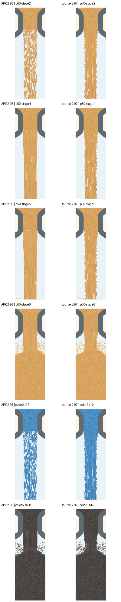

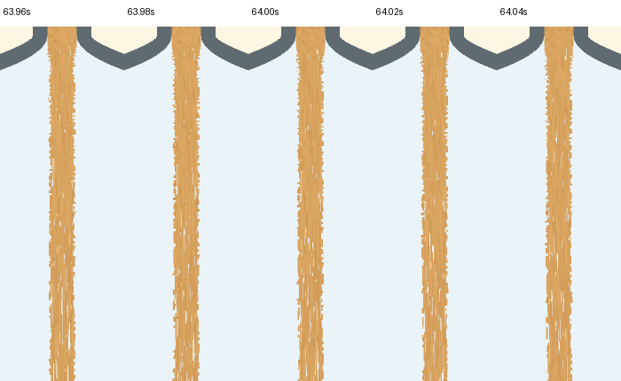

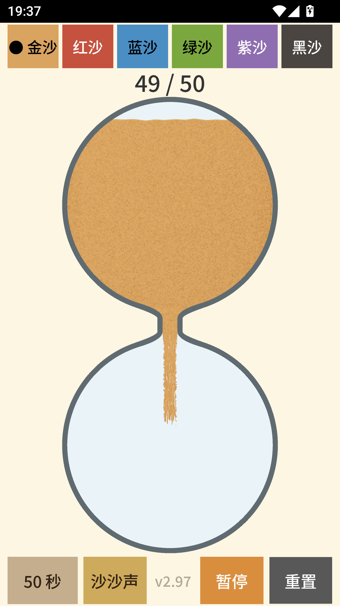

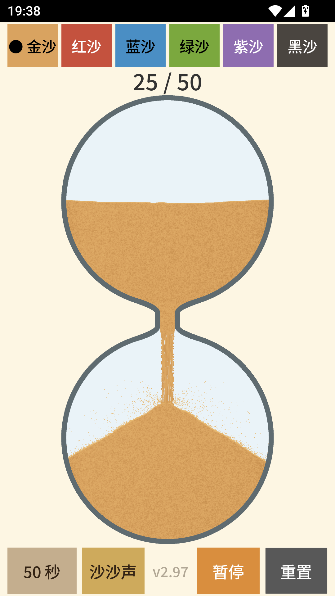

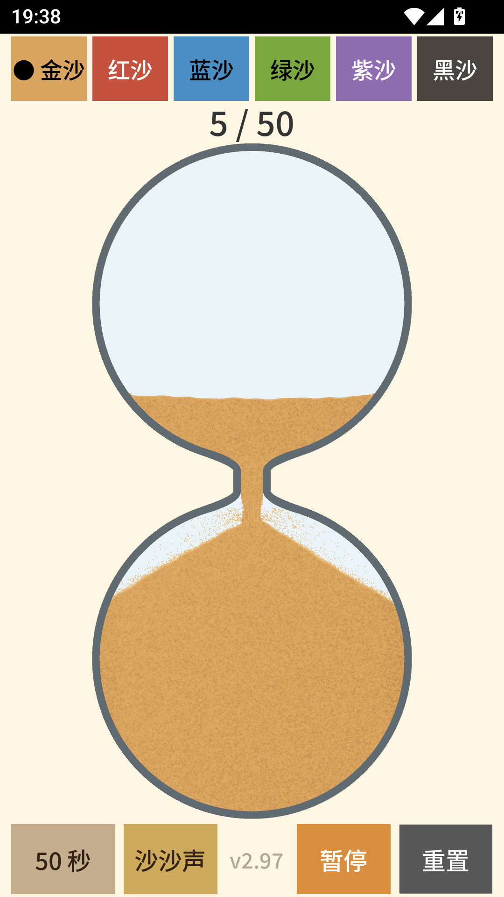

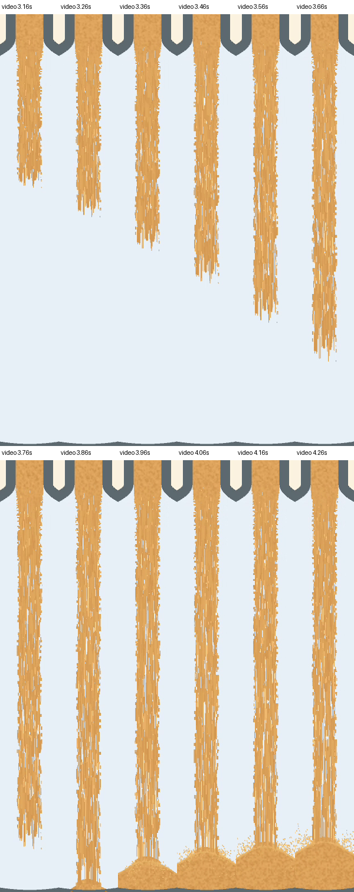

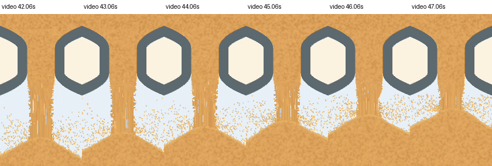

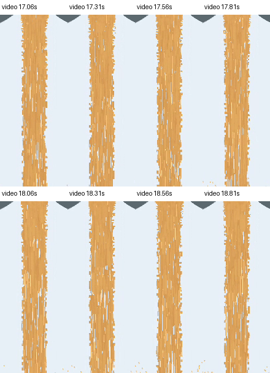
v2.96 · 2026-10-13
用户指出的三项问题均在已有 v2.96 安装版素材中找到证据：S04 首次落地前后疏密突变、NS03 出口横向材质接缝、S05 外缘随机颗粒感不足，分别记为不通过。当前规则共 36 项，本次仅复核这三项，其余 33 项未在本轮重新验收；0 项通过。没有修应用或新跑测试，旧采集记录保留。
36 个编号 · 通过 0 · 不通过 3 · 尚未完成验收 33

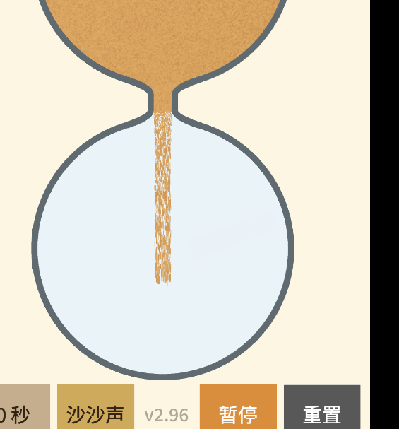

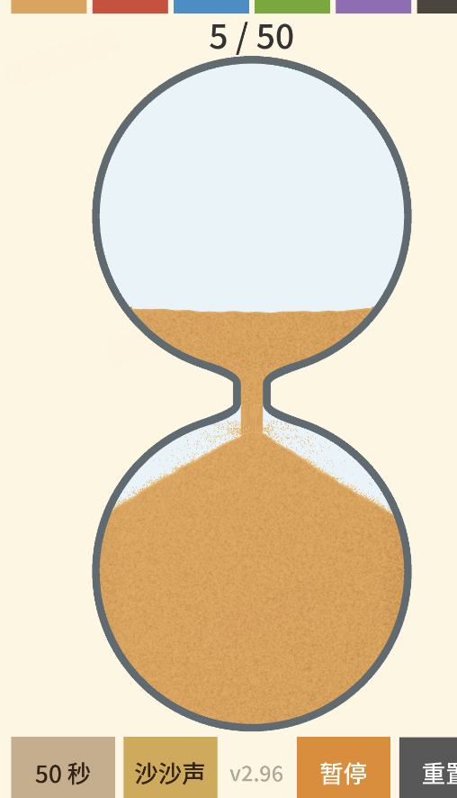

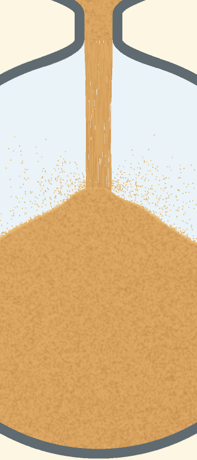
v2.96 · 2026-10-13
本轮是真正安装的 GitHub 2.96 APK，不是旧容器直推源码。补齐 33 个编号的实图与适用动态资料，但没有完整矩阵验收；当前没有编号登记为通过。
33 个编号 · 通过 0 · 不通过 0 · 尚未完成验收 33


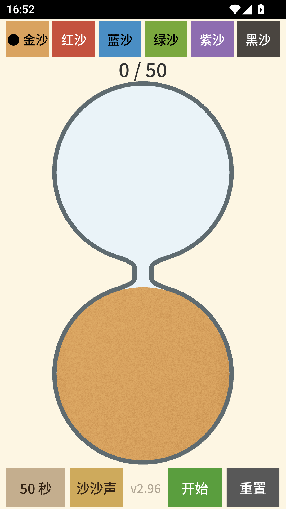


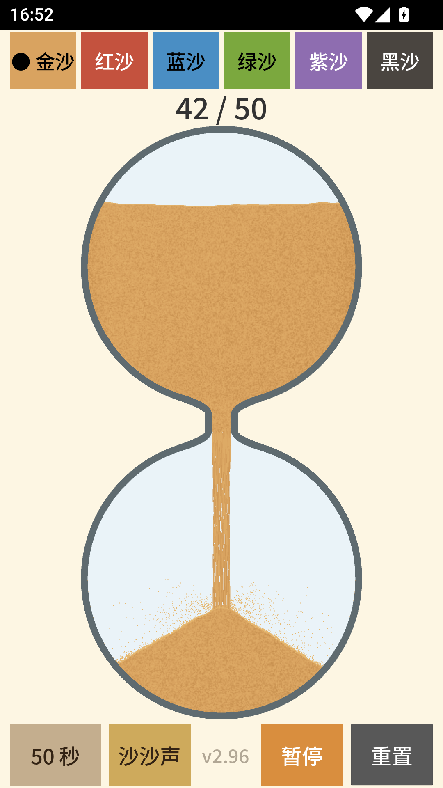
v2.96 · 2026-10-13
仅归档已有证据，没有本轮新测试。源码直推到旧 APK 容器；只有 50 秒金沙开局附近的静态片段，不是完整沙流验收，也不是新 APK 安装验证。当前没有任何用例登记为通过。
33 个编号 · 通过 0 · 不通过 0 · 尚未完成验收 33

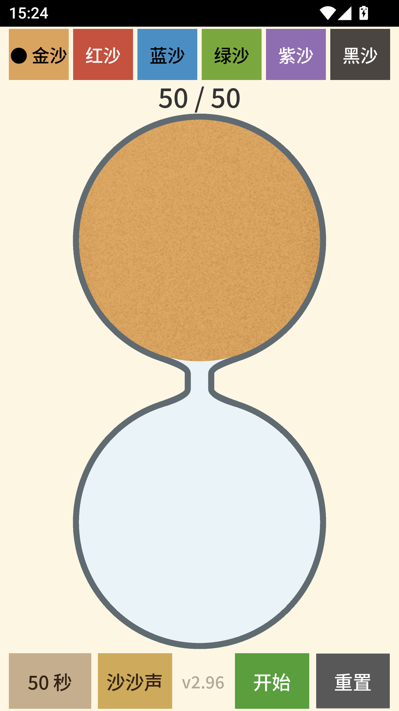

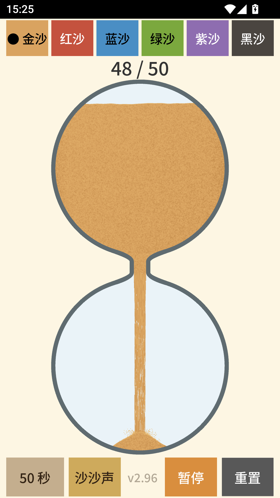

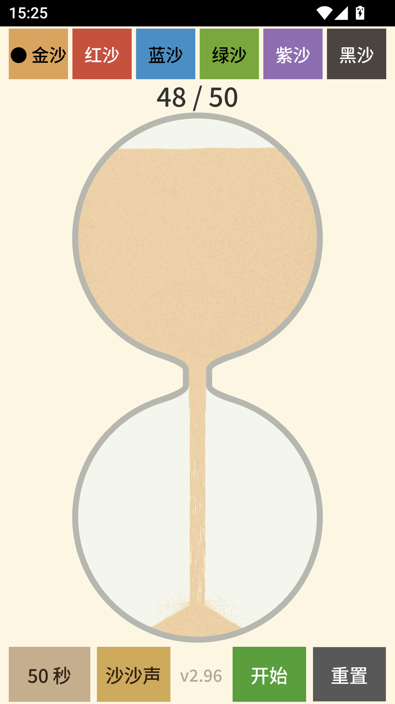
旧版本历史资料
历史图片和改动说明不是逐项测试记录，没有证据的编号不能补写通过。
新增版本记录
运行资料生成命令 python -B src/tools/build_sand_flow_docs.py --new-record 版本号，会列出全部编号，默认未测，保留规则快照；不启动应用、不执行测试。同版本同日期的现有记录不会被覆盖。